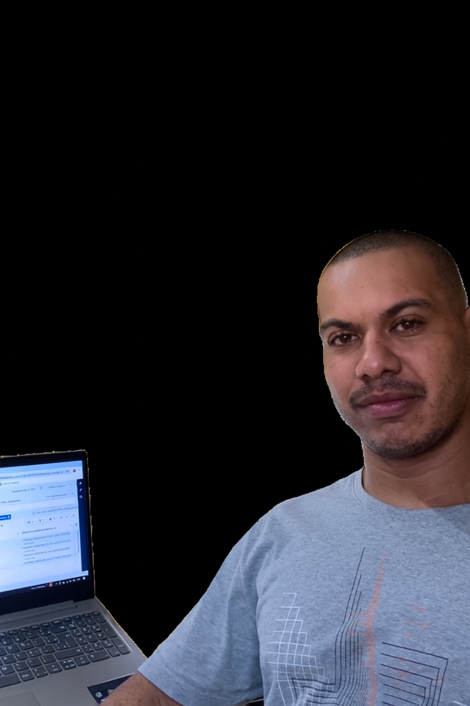

Organize os processos que fazem o seu negócio escalar
Inteligência artificial para negócios no Digital
Quem sou eu

Olá! Meu nome é Fernando, e sou um desenvolvedor apaixonado por tecnologia e inovação. Minha jornada no mundo digital começou há alguns anos, explorando diversas linguagens e frameworks, sempre em busca de soluções criativas e eficientes.
Sou especialista em transformar ideias complexas em aplicações robustas e intuitivas, com foco especial em otimizar processos e promover o crescimento de negócios no ambiente digital. Acredito firmemente no poder da Inteligência Artificial para redefinir o futuro, e estou sempre atualizado com as últimas tendências para entregar resultados de pontima.
Se você busca um parceiro para escalar seu negócio com tecnologia de ponta e uma visão estratégica, vamos conversar!